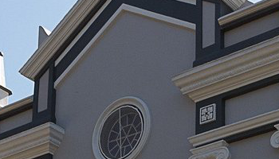

Parque Cultural Epopeia Italiana
Embarque em uma viagem incomum através da história no Parque Emporia Italiana. Conheça as histórias de Lázaro e Rosa, que chegaram ao Brasil no início do século XX
Embarque em uma viagem incomum através da história no Parque Emporia Italiana. Conheça as histórias de Lázaro e Rosa, que chegaram ao Brasil no início do século XX

O Castelo Lacave é o resultado de um sonho do empreendedor uruguaio Juan Carrau, que seguiu uma planta original de um Castelo Medieval espanhol do século XI

A Estrada do Imigrante é uma das rotas turísticas de Caxias do Sul, na região da uva e do vinho na Serra Gaúcha.
No caminho da Estrada do Imigrante se encontra a essência da colonização italiana no Sul do Brasil, com destaque para belas propriedades, parreirais e uma gruta incrível.

A Igreja de São Pelegrino é um templo católico localizado em Caxias do Sul, no estado do Rio Grande do Sul, Brasil.
Sua história está vinculada aos primórdios da imigração italiana e à fundação da cidade, e o edifício tem várias obras de arte em seu interior, com destaque para os painéis de Aldo Locatelli.